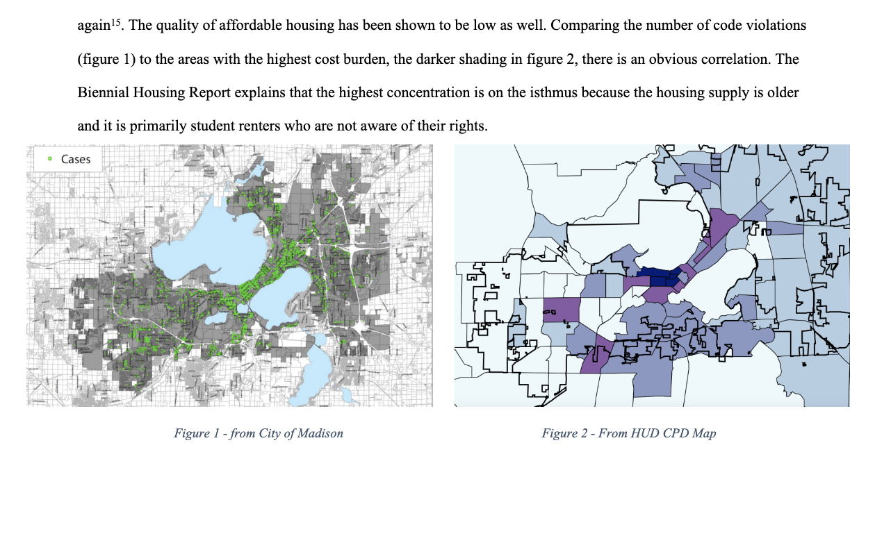
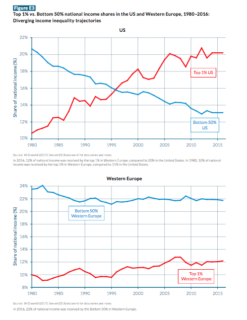
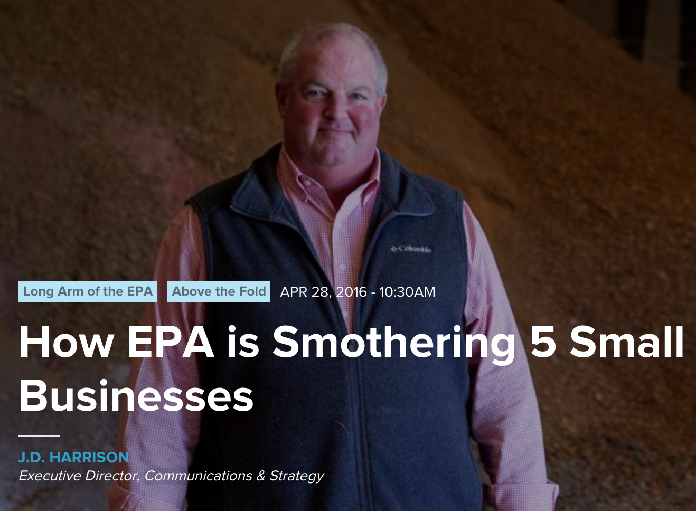
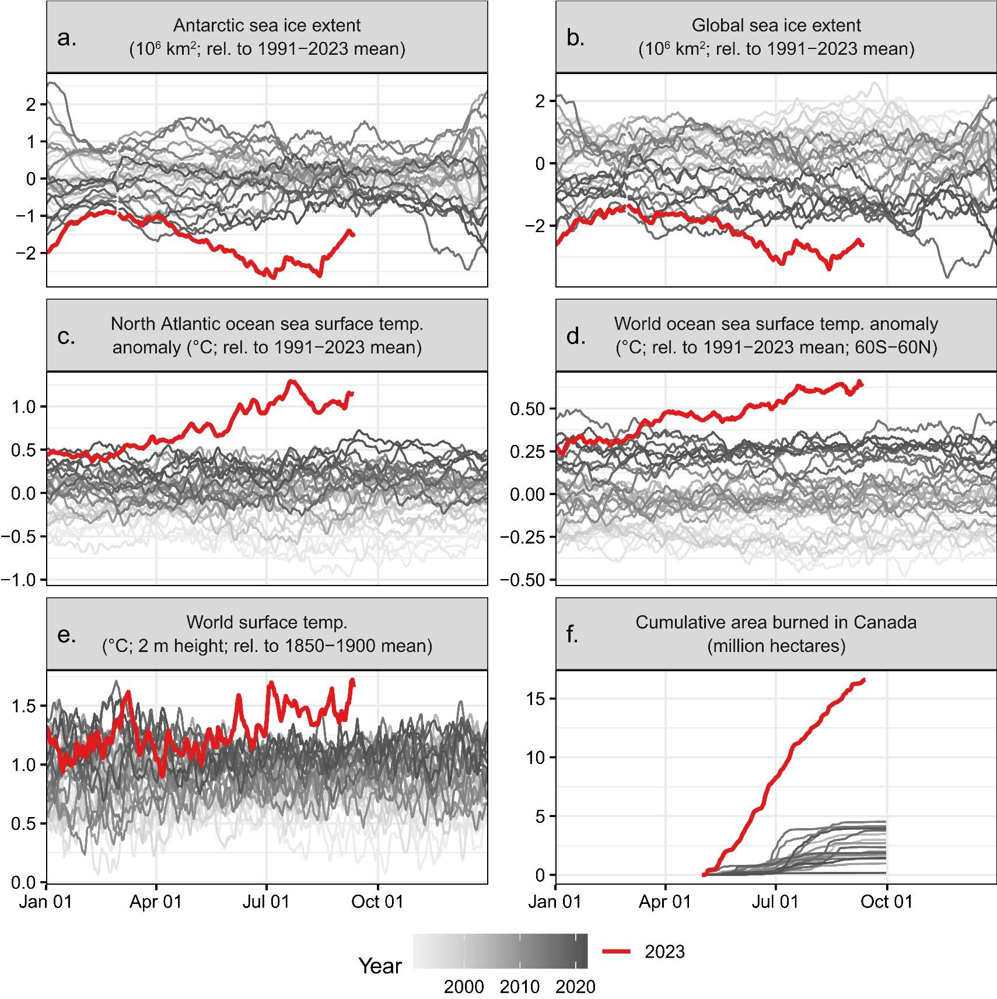
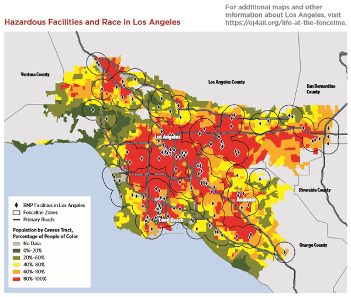
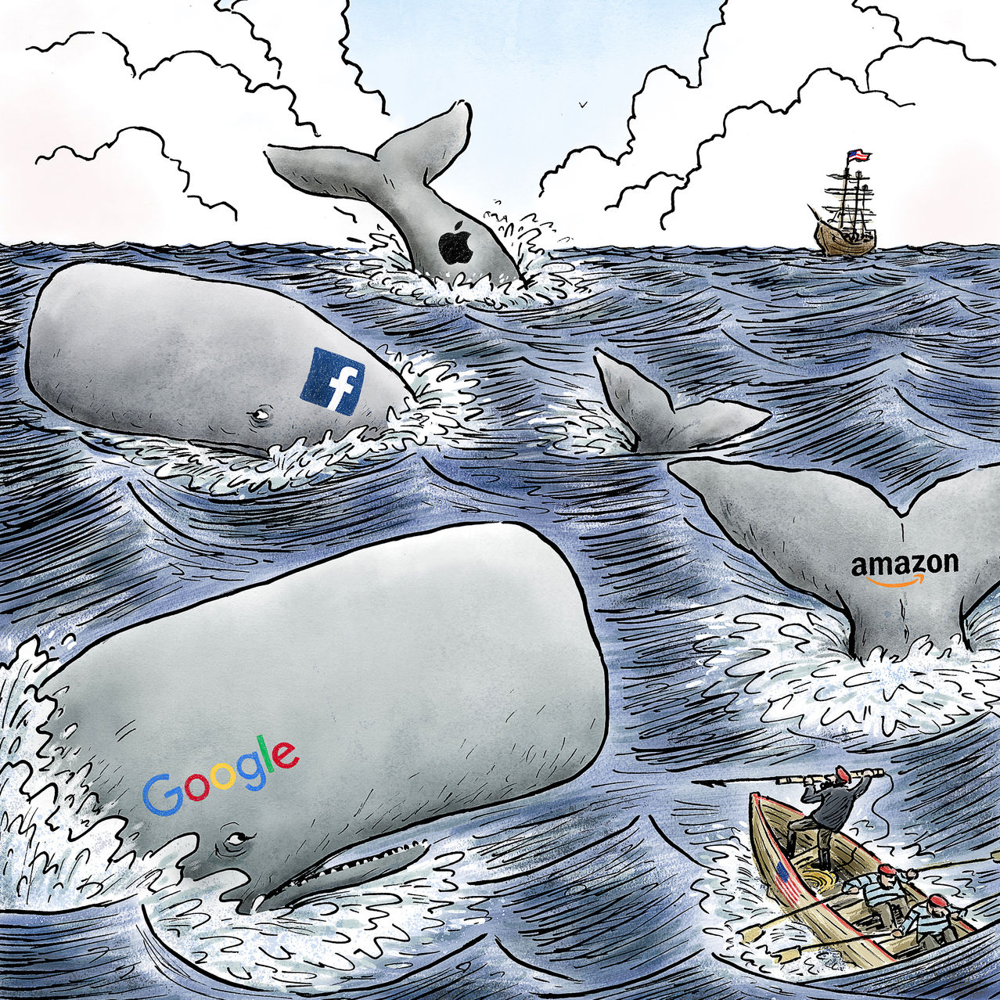

Policy Paradox, The Art of Political Decision Making
Part 3: Problems
In Part 1, Stone introduced the idea that the metaphors we use to understand society, reasoning, and policymaking shape policy outputs and outcomes.
In part 2, Stone introduced five big “goals” (more like values) that motivate policy demands.
In part 3, Stone explores the social construction of “problems” through the perspectives we take, the stories we tell, and the symbols, metaphors, and definitions we use.
“We all know the language of stories, but it is so deeply embedded in our political discourse that we are usually unaware of its presence.”
“To become fluent in these languages is to learn to see problems from multiple perspectives and to identify the assumptions about both facts and values that political definitions don’t usually make explicit.”
Symbols
- are invested with meaning by those who use it
- may assert how the world works (metaphor)
- may represent a whole with a part (synecdoche)
- may assert likeness (analogy)
- are more or less ambiguous
An astute policy analyst or political actor must understand and be able to analyze how symbols work.
Framing problems
Political actors use symbols that define problems in ways that will persuade doubters and attract support.
For example, all maps are abstractions; they highlight some features of geography and ignore others.
This memo makes an argument by putting maps highlighting two different things (housing code violations and housing cost relative to income) side by side, thus linking them visually:
Stories
Most definitions of policy problems have a narrative structure.
- a beginning, middle, and end
- heroes, villains, victims
- good and evil
- assert or imply how the world works
- grip our imaginations because they promise a resolution
What stories are shaping policymaking today?
Stories about change:
- stories of rising
- stories of decline
- stories of stymied progress
- “change is only an illusion”
What stories are shaping policymaking today?
Stories about power:
- stories of helplessness vs. control
- stories of conspiracy
- “blame the victim” stories
What stories are shaping policymaking today?
Stories about trust and wisdom:
- revelation stories
- parables and cautionary tales (I added this category; the others are in Stone, chapter 7)
Symbols are used to frame an issue as a given story.
Stories of change: decline and rising

Decline
“In the beginning, things were pretty good. But they got worse. In fact, right now, they are nearly intolerable. Something must be done.” - Stone, p. 160
Stymied-progress:
“Over the [last] century, we developed complex disease monitoring systems. We created best practices for communicating disease risk. ..The Centers for Disease Control and Prevention are now well-practiced at-risk communication. A 65-page manual details how the agency should communicate during a health crisis like the one we currently face. That’s why it’s so troubling that the White House has taken over communication around COVID-19.”
Stories of change: “change is only an illusion”
From Clinton and Obama Laid the Groundwork for Donald Trump’s War on Immigrants: Trump’s rhetoric is shocking, but his immigration policy is nothing new. (Notice the metaphors “laid the groundwork” and “war.”)
Non-criminal immigration arrests did indeed jump from 2,500 in the first three months of 2016 to 5,500 during the same period in 2017, while criminal arrests also rose, bringing the total to 21,000. Only 16,000 were arrested during the same months in 2016. The article, however, ignored the fact that 2016 was the all-time-low year for arrests under President Obama. In the first three months of 2014, for example, 29,000 were arrested, far more than Trump’s three-month “record.”
Stories of power
Helplessness and control
What all these power stories have in common is their assertion that there is a choice. - Stone, p. 168
Conspiracy stories
- shift issues from fate to human control
- reveal harm has been deliberately caused or knowingly tolerated
- call to wrest control from the few who benefit at the expense of the many
Blame-the-victim stories
(I would have labeled these “personal responsibility stories” or “irresponsible victim stories”)
- shift issues from fate to human control
- locates control in the people who suffer from the problem
- end with a call for victims to reform their own behavior
From Mortgage Crisis: Stop Rewarding Irresponsible Consumers:
“During the State of the Union, President Obama called for a new era of responsibility and declared that there would be “no bailouts,” yet he offered a supposed solution for the ongoing mortgage crisis that rewards irresponsibility by promising even more bailouts for “underwater” homeowners.”
Synecdoche
Why did J.D. Harrison (Executive Director for Strategic Communications at the U.S. Chamber of Commerce) pick just five stories?
Horror stories
“generate fear that may temporarily suspend our inclination to ask factual and analytical questions.” (p. 169)
Metaphors
Description implies prescription
In a culture where the common understanding of fairness is “treating like things alike,” to claim a likeness is also to posit an interpretation of equity and to demand equal treatment. (Stone, p. 171)
Metaphors as a rhetorical resource
What metaphors are providing resources to shape policy today?
- living organisms and disease
- natural laws
- machines
- wedges, inclines, steps, and ladders
- disease
- containers
- war (e.g., The war metaphor and the coronavirus)
(Stone, p. 172-176)
Ambiguity
A symbol can mean different things to different people or in different contexts.
The ambiguity of symbols helps transform individual strivings into collective decisions. Symbols can help unite people around ideals because they exist outside the realm of the practical and the real. Symbols allow coalitions to form when pure material interests would divide people. - Stone, p. 182
Legislators use ambiguity when delegating power to administrative agencies, which must then hash out the details.
Numbers
Numbers imply problems
One way to define a problem is to measure it. Bardach told us that problems are best stated as “too much” or “too little” of something. Numbers allow definitions of too much or too little.
Measuring occurs with goals in mind
Yet, there are many possible ways to measure something, and the choice among them depends on one’s purpose for measuring.
- What is the current unemployment rate?
What do some economists mean when they say there is a “natural” rate of unemployment (NAIRU)?
Is there a “natural” rate of homelessness?
What does the language of “nature/natural” imply about our ability to solve problems in the story one is telling?
Counting begins with categorization
requires selecting important characteristics and boundaries in the form of rules or criteria for inclusion and exclusion.
resolves questions of similarity and difference by assigning things to one group or another.
debates that appear to be about the tally are usually about the categories
Numbers are Metaphors
To categorize in counting or to analogize in metaphors is to select a feature of something, assert a likeness on the basis of that feature, and ignore all other features. - Stone, p. 185
Who or what is counted can be challenged for wrongful inclusion. Who or what is not counted can be challenged for wrongful exclusion.
Statistical communities
Sometimes numbers represent members of what we might call “natural communities” or “primary groups,” people who actually interact regardless of whether they are counted. The population of a village, the size of a family, or the size of a school are examples. Other numbers represent artificial or statistical communities; they lump together people who have no relationship other than the shared characteristic that determined the count, such as age, occupation, or sexual orientation.
(Note: rather than “natural communities,” I might call these “social communities” because “natural” implies something beyond human control.)
Counting divides and unites:
Social movement leaders must convert statistical members (ones who share important characteristics but have no real relationship with the group) into natural members (ones who actually participate)…counting can be a deliberate tool for political mobilization. - Stone, p. 194
For example, the Environmental Justice movement has tried to link measures of exposure to environmental hazards to demographic (race and class) categories:
This map highlights hazardous chemical facilities (one measure of environmental risk) and race (as counted by the Census):
Numbers define the dimension of the conflict
Numbers reduce conflicts to a single dimension.
For example, if we only considered the energy density of fuel sources (versus cost or safety), we might focus policy on building more nuclear power plants:

Numbers legitimize political decisions
Numbers symbolize precision, accuracy, and objectivity. They suggest mechanical selection, dictated by the nature of the objects, even though all counting involves judgments and discretion. - Stone
In doing so, numbers sometimes mask the political nature of a decision.
What is a “Safe” threshold?
Further reading on science and “safe” standards: The Science Charade in Toxic Risk Regulation by Wendy Wagner
Reactive effects

Reactive effects
In science (especially social science), we confront observer effects—the fact that things, and especially people, behave differently when observed.
People change their behavior in response to being measured. Understanding reactivity is so important in policy analysis because, unlike the deliberate falsification of numbers, it is an inextricable feature of social measurement. - Stone, p. 200, citing “The Third Level of U.S. Welfare Reform” by Schram et al.
Policy Feedback
Stone’s concept of reactive effects incorporates concepts from studies of policy feedback, where the policy creates, empowers, and/or demobilizes political actors, thus affecting the political terrain (to use a metaphor) on which future policy is made.
By counting people as part of a group, a policy may induce them to act as a group (whereby policy that creates a statistical community leads to the formation of a natural (social) community).
Group theories of politics (e.g., pluralism) tell us to expect these groups to then advocate for resources, privileges, or protection in future policy processes.
If the Department of Justice Antitrust Division measures market concentration to decide whether to permit corporate mergers and acquisitions, how might large companies lobby regarding the definition of the “market” they are in?

Every number, therefore, is an assertion about similarities and differences. No number is innocent, for it is impossible to count without making judgments about categorization. - Stone, p. 188
See numerical Strategies in Problem Definition (p. 203)
To Know the Causes of Things
(Or, to feel the causes of things?)
Issue analysis
I often say that issue analysis in policy memos must identify “root causes” that can be targeted by policy.
Stone’s critique demands that we see the prescriptive power in causal analysis.
Like numbers, causes highlight some aspects of a problem and ignore others. Causal chains are stories that define problems and assign blame.
We look for causes not only to understand how the world works but to assign responsibility for problems. - Stone, p. 206
Are causes determined more by science or rhetoric?
Perhaps this question is unfair because rhetoric often uses the cultural authority of science and numbers, and conversely, science must be communicated in language that has been shaped by political rhetoric.
This does not mean that science is worthless.
On the contrary, political rhetoric uses science whenever possible precisely because of the broad trust in scientists to provide the most reliable answers to questions.
This trust exists for good reasons.
Causal stories as problem definition
The natural world is the realm of fate…The social world is the realm of control and intent…In everyday discourse, as Erving Goffman points out, we use the term causality to refer to both “the blind effect of nature and intended effect of man, the first seen as an infinitely extended causal chain of caused and causing effects and the second something that somehow begins with a mental decision.” - Stone, p. 207, citing Goffman, “Frame Analysis,” p. 23
See: Types of Causal Theories (p. 208)
Intentional causes
When is calculated risk “malicious intent” to harm?
Stone cites the case of Grimshaw v. Ford Motor Co., where the court held that
Ford’s business decision to trade safety for cost was a “conscious disregard for the probability that its conduct will result in injury to others.”

Inadvertent causes
- ignorance
- carelessness or recklessness
- mechanical causes
Mechanical and complex causes as anti-politics
For example, climate change has moved from mechanical cause in the Holocene to intentional cause in the Anthropocene.
Perhaps a conspiracy if one is explicitly for more ambitious climate policy or a calculated risk if one is explicitly opposed to such policy—both explicitly political positions.
Or, for those who want to strategically frame the issue out of political discourse, perhaps the climate is such a complex system that it is impossible to make policy, and thus, we should not try. We are helpless—an anti-political position using a story of control.
Nature
“One thing people always loved about the Weather Channel was that it was nobody’s fault,” said Dr. Heidi Cullen, the channel’s climate scientist. “And then [Hurricane] Katrina came along, and suddenly the weather was potentially our fault.”
The idea that natural phenomena are “uncaused” and have no relation to human decision-making is outmoded. - Stone, p. 218
Are pandemics natural disasters?
Into which box(es) in Table 9.1 has the COVID-19 pandemic been framed?
The Banality of Evil
The podcast Death by a Thousand Cuts talked about “Administrative Evil” in Flint, Michigan.
“I was just following orders” is the classic defense of low-level bureaucrats and soldiers - Stone, p. 213
Arendt wrote about the Banality of Evil while covering the trial of Adolf Eichmann for the New Yorker. See Eichmann in Jerusalem.
What is an individual’s duty to question authority?
If Eichmann’s work as a bureaucrat is seen as a mechanical process of following orders, then he is not a policy actor and thus not responsible for deaths (and inadvertent cause, not an intentional cause).
How might we draw lines between people who are simply following orders and thus blameless and those who act consciously and are thus responsible?
Institutional structure and historical causes
Path dependence is the idea that decisions in one period determine the choices available in future periods.
Sometimes, historical and institutional causes can be used to avoid blame because they imply that outcomes are not the result of intentional actions in the present.
However, they can also be used to transform conditions into problems that require a remedy.
Institutional structure and historical causes
For example, if some inequality is the result of historical or institutional disadvantage, then it moves from the realm of “just the way things are” to unintended consequences (inadvertent cause) or accepted consequences (similar to calculated risk, an intentional cause), opening the door for advocates to demand a solution to the historical or institutional problem.
Institutional structure and historical causes
Civil rights advocates have (somewhat) achieved just such a transformation. Where once disparate impacts that were not intended (or where intent could not be proven) were not considered discrimination, now policy with disparate impacts is considered institutional discrimination.
In 1971, the Supreme Court, for the first time, allowed statistical evidence of a rule’s “disproportionate impact” on a minority group to stand as proof of discrimination without a showing of intent to discriminate…In effect, advocates successfully created the problem of “institutional discrimination” by pushing a causal story from the realm of intent to the realm of inadvertence. - Stone, p. 222
Causal stories allocate blame and power
Bringing a condition under human control often poses a challenge to old hierarchies of wealth, privilege, or status. - Stone, p. 224
Struggles over causal definitions of problems are contests over basic structures of social organization and allocations of power. - Stone, p. 225
The fight is about locating moral responsibility and real economic costs on a chain of possible causes. - Stone, p. 226
The legitimacy of causal claims
The political success of causal theories is also influenced by two powerful institutions for determining cause and legitimizing claims about harm: law and science. - Stone, p. 224
From a strategic perspective, this is why good research and understanding of legal authority are so important for writing policy memos. Without evidence and authority that your audience sees as legitimate, they will not take your recommendations seriously.
Interests
Stakeholder analysis
Identifying stakeholders (interests) is a vital part of issues analysis and the comparison of policy options in a policy memo.
An effective policy memo analyzes the political terrain (to use that metaphor again) of existing stakeholder groups and anticipates how stakeholder interests might be mobilized by policy, even interest groups that are not yet mobilized or do not yet exist because policy proposals create interests.
Indeed, in writing a memo, one inevitably defines interests in the way they present the issue.
Mobilizing interests
In defining an interest, analysts, organizers, and political leaders highlight some characteristics of people and ignore others (where have we heard that before?).

Collective action
[People] have relationships with parents, friends, partners, teachers, bosses, and cultural heroes. These ties create strong mechanisms of influence and moral leadership. In turn, these mechanisms create norms of altruism, reciprocity, cooperation, and ready channels for collective action…If a community has a dense network of voluntary associations, these serve as channels of participation for the collective good. All of these factors create social capital, which, like physical assets or material wealth, can be used to harness individual energies for the common good. - Stone, p. 236-237, citing Elinor Ostrom’s Governing the Commons: The Evolution of Institutions for Collective Action and Robert Putnam’s Bowling Alone
“The issues of how best to govern natural resources used by many individuals in common are no more settled in academia than in the world of politics.” - Ostrom, [Governing the Commons: The Evolution of Institutions for Collective Action]
Collective action in politics is more like a sports competition than a bargain hunt. One plays to win, and winning gives the game its direction and structure, but one plays even more just to play, and the greater satisfaction comes from being in the game. Seen in this light, the costs of collective action, such as the time and effort are its benefits. - Stone, p. 237, citing Hirshman, Shifting involvement: Private Interest and Public Action
Issues and interests define each other
Know: Wilson’s Cost-Benefit Policy Typology of Political Contests (p. 239 in Stone, p. 267 in Birkland)
This typology describes the kind of politics generated by different policy tools (we will return to policy tools in part 4 of Sone).
| Concentrated benefits | Distributed Benefits | |
|---|---|---|
| Concentrated costs | Interest group politics | Entrepreneurial politics |
| Distributed costs | Clientele politics | Majoritarian politics |
Issues and interests define each other
In practice, the two types of unequal contests [clintele politics and entrepreneurial politics] are really only one, depending on whether we look at the issue from the vantage point of the proposed change or the status quo. - Stone, p. 240
| Concentrated benefits | Distributed Benefits | |
|---|---|---|
| Concentrated costs | Interest group politics | Entrepeneurial politis |
| Distributed costs | Clintele politics | Majoritarian politics |
Example: Climate Change
Are the impacts of climate change diffuse and least likely to seriously affect us here in the U.S.? Are we just in a giant collective action problem where no one has the incentive to act or get organized? It might not even be worth trying.
Or is climate change the major determinant of your future and your responsibility because disproportionate effect you have on it? Perhaps younger generations have a massive stake and are willing to organize around climate policy.
Questions
To what extent do the characteristics of issues or policies shape the resulting politics (as Wilson argues)?
To what extent do politics shape the characteristics that policies and issues are portrayed and perceived as having in the first place (as Stone argues)?
Stone claims that “Programs don’t themselves have inherent distributions of costs and benefits. Rather, political actors strategically represent programs as contests between different types of costs and benefits.” (Stone, p. 243)
“Good” vs. “Bad” interests
“Weak” vs. “Strong” interests
In American political culture, where the government is viewed as properly a referee among interests rather than a strong power itself, the most important source of outside help is the government. Ironically, then, portraying one’s own side as weaker becomes strategically useful in order to attract both government support and broad support from as-yet-uninvolved groups who share your values. - Stone, p. 245
Decisions

Policy reasoning
“It is only in combination with particular, non-rational impulses that reason can determine what to do.” - Stone
Policy reasoning example: the next pandemic
Suppose that scientists estimate that COVID-24 has a mortality rate of 0.2% and will infect 50% of U-M’s 40,000 students, meaning that 60 U-M students are expected to die. The Michigan Department of Health & Human Services is deciding between two vaccination programs and can choose only one:
- Program A would use a conventional vaccine that can be counted on to save 20 people.
- Program B would use an experimental vaccine that has a 1/3 chance of saving all 60 people and a 2/3 chance of saving no one.
Which would you choose?
Now, suppose the Michigan Department of Health & Human Services is considering two other possible vaccination programs:
- Program C would use a conventional vaccine that we know from experience will result in the death of 40 people
- Program D would use an experimental vaccine that would offer a 1/3 chance no one would die and a 2/3 chance that all 60 students would die.
Which would you choose?
The power of issue framing
Changing labels (“lives saved” vs. “deaths”) can turn most people from risk-tolerant to risk-averse. (See The Psychology of Preferences by Daniel Kahneman and Amos Tversky.)
Issue framing
The process of focusing attention on a particular slice of an extended causal chain is called issue framing.
Like it or not, Stone argues, any issue analysis also involves issue framing. Stone asks us to think carefully about how we frame problems and solutions because it matters.
In this pandemic example, the consequence (or at least its expected value—the expected number of deaths) is exactly the same in all cases, but some of these policies seem more appropriate than others. This suggests that choices among policy options depend on more than their expected outcomes.
Framing and bias
When should framing effects be considered errors in judgment? When should they be considered biases?
For example, public opinion flips depending on whether a policy is characterized as an “expansion of government power” or an “expansion of government spending” (Gallup, 2009). If a policy was characterized using the word “welfare,” support dropped by 40%. (Smith, 1987)
Selecting alternatives
Perhaps your reaction to the choice between A and B was, “No! Those can’t be our only options!”
Whether you are wearing your citizen hat or your analyst hat, be on the lookout for Hobson’s choices. Whenever you are presented with an either-or choice, you should be tipped off to a trap. You can disengage it by imagining different alternatives other than those presented (there are always more) and by giving new attributes to the ones presented.
Implications for policy analysis
Policymakers are smart and will often see through false choices (even my friend’s 2-year-old does not always fall for the “eat this or eat that” trick). This is why it is important to compare good options–that is, options your reader will agree are some of the best things they might do. If the options you present appear to bias the decision, they are not going to take your analysis seriously. But, of course, the options you choose will always affect the decision! The trick is to present options that don’t make your analysis seem pre-judged or tilted to a particular outcome.
Cost-Benefit Analysis
The clever analyst can throw the decision one way by including enough negative consequences to outweigh the positive ones or throw it the other way by including more positive consequences…If you understand how malleable cost-benefit analysis can be, you can more effectively critique other analyses and construct analyses that will support your political goals. - Stone p. 264
Quantification bias
- Analysts force themselves to measure all the consequences in the same terms.
- This pressures analysts to ignore what they can’t count.
Depending on the proposal, intangible cost might be accidental deaths, adverse health effects, damaged political reputations, urban decline, or loss of a wilderness area. Intangible benefits might be psychological security from safety measures, enhanced political credibility, urban revitalization, species diversity, or spiritual nourishment. - Stone, age 261
Putting costs and benefits in context
Stone offers some advice on the comparison of options in a policy memo:
Evaluating different options should include how the options are and could be characterized and what they represent—or might represent— symbolically, as well as practically. - Stone, p. 261
Costs often rely on prices in markets as currently structured rather than how the market might price things after reform.
Instead of taking prices as a given, policy reformers should analyze the forces that create prices and sometimes put their efforts into changing prices by changing the power relations that set them. - Stone, p. 262
Logics of appropriateness and consequences
From March and Olson Rediscovering Institutions
Logics of consequences: “What is the optimal action given the costs and benefits?”
vs.
Logics of appropriateness: “What does someone like me do in this context?”
How might ideas of appropriateness change by 2050?
Utilitarian vs. deontological decision-making
What makes policy good or bad?
Deontology is a normative ethical theory that the morality of an action should be based on whether that action itself is right or wrong under a series of rules rather than based on the consequences of the action.
Utilitarianism is a normative ethical theory that the morality of an action should be based on the consequences, specifically maximizing the resulting good or utility.